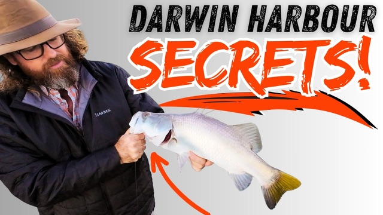

Starlo Gets Reel

Originally broadcast on Starlo Gets Reel. Watch on Starlo Gets Reel.
G'day, Starlow here, and it's 1st light at the Diner Beach Boat Ramp in downtown Darwin. I'm here to hook up with my good mate Glenn Watty Watt, who owns Barefoot Fishing Safaris. He's got a day off from guiding, and we're headed out for a morning of social fishing on Darwin's expansive harbour, and we've been joined by Glenn's dad, Danny, who's holidaying in the Top End. The sun's just peeking over the horizon, and it's a classic dry season day.
We're all pretty excited about what the morning might hold. We're headed over into the harbor's East Arm, in the hope of finding some Barra and other customers up on the shallow flats. The tide's falling, and that should force both the baked fish and their hunters out of the mangroves and onto those flats. It's a bit early to see them yet.
So we're just blindcasting our lures at the outer edges of the mangroves, working them slowly and twitchily back out to mimic an injured bait fish. I can think of a lot worse places to be on such a gorgeous territory morning. It's already 20 odd degrees, and the day looks like a purler. The tide's still a bit too high for this to be super effective, but there's still plenty of anticipation with each cast.
And sure enough, there's one. Yeah. Oh. Oh, yours is a bit better than mine. What he's on as well down the back.
Right on, nickname. Here's the caddy, bro. Oh, no. Mine jump, too.
I've looked a catfish. Well, don't worry about it. No, don't worry about mine. Well done, mate.
What's that on the plastic? No, that's really... Ah. Nice fish, too.
Oh, nice, stretchy mind, too. You can really feel it. What he's pinned a decent barra on his rapala flatshad. He's running fluorocarbon line straight through instead of his usual braid, just as a trial. Danny's netted a few fish in his time and he makes no mistake.
Good fish. Wow. He's legal. Probably a dealer, don't I?
Yeah, did you bring yours in, too? Bloody thing jumped when it took it, I thought... Oh, Grace, come on. Bloody catfish, they love me.
Cheers, mate. What is Barr as well and truly legal? So it looks like it might be coming home for dinner. Pick him up and give us a look before you take the lure out.
I'll get a shot down, he's gob. The old flats wrap in the perch colour too, eh? That was that was pretty consistent back in the day. bought a lot of fish on them.
He looks great. It's the smallest size too, and they don't make that big size anymore, unfortunately. You're on the smaller one, are you? Yeah, yeah, the seven, isn't it?
They don't do the 9 anymore? No, the 10, yeah. Bob 10. Scan the books too.
Shame he doesn't have a $10000 tag in him would be real happy then. He's got me 57, doesn't he? I reckon. Got the brag, then.
All right, I better get one. Damn. What, he come off a stick or...? Yeah, right between those.
Mm. Certain vehicle. Let's say you're pretty close with your 57. Oh. You feel better than that.
Oh, 63. Holy smoke. You better earn another. Yeah, don't believe you likes again.
Huh. All right, well, that's a promising start to our morning. I better get back into it. I'd like one like that myself.
And as the tide falls, our chances should only improve. Yeah. Oh, for sure. You just on the original trebles?
Yeah. Yeah. Usually, usually, until, like... Yeah.
I reckon it was old Billy Briscoe who first said that to me. He said, Don't be in too much of a hurry to change those trebles. These fish 'em till they bend. You'll never pinfish better than you will with those original ones.
It's true, too. Sometimes we're a bit premature in beefing up the hardware on our barrel lures. There you go. But despite our great start to the morning, things went rather quiet after that.
We checked out some prime looking creeks, snags and runoffs right through the bottom of the tide, but to no avail. Barrow fishing success on Darwin's doorstep is far from guaranteed. These easily accessible urban waters get plenty of angling pressure from the city's growing population, a significant percentage of him fish. You can't really expect the fishing to be a pushover, but the rewards are certainly there for those willing to invest the effort, just like anywhere.
Eventually, we decide to pull the pin on the barrow and head out into the more open waters of the lower harbour to chase a Pelagic or two. Through the dry season, there are almost always tuna, mackerel, queenfish, and travally, feeding somewhere in this wide expanse of green water. It's just a matter of finding a willing school, and there will usually be signposted by wheeling seabirds and splashes on the surface. Unfortunately, the 1st good patch we spot are inside the no go zone around the naval facilities.
But a few minutes later, we find another school outside the prohibited zone. Good fish amongst them. This looks good. No point charging in and spooking them.
We'll let the strengthening soueaster push us down towards them. It pays to be patient. I'll just see the whites of their eyes in a minute. Glenn and Danny are running metal bait fish profiles or slugs on their spin outfits, but I have opted for one of the new squidgy glimmer, soft plastics, strung on an arc genesis pro tournament jighead.
That looks the goods to me. Let's see if these sometimes fussy fish agree. Should do it. The fish are ignoring the metals.
Let me try the squidgy. Wow, he wanted that. I think so. Luckily, I'm not on the BFS wheel anymore.
Got a little bit of string on this one. No monster, but it's putting a nice bend in the light bait caster, Rod. That's so much fun. It's a queenfish, just an average one for the harbour.
Very nice. Thanks, mate. They grow a lot bigger in here than this one, as I found out back in 2012 when I caught the world record Queenie on Fly in these very same waters. Today's is a little more modest.
First time you'd seen one, was it? Yeah, it is. Oh, I think he might have taken it home with him, too. Just got the juggerhead back.
The plastic didn't survive the battle. Beautiful. Thanks, mate. That jighead's fine, though, and ready for another plaquie.
Let's do that again. But unfortunately, that school didn't pop up again, and by now the soueasterly breeze was beginning to strengthen. So we decided to pull the pin and head in for a counter lunch and a frothy one at a local pub. This city fishing has its advantages.
If you'd like to plan your own Top End adventure, whether it's a day out on the harbour or the troop of a lifetime to a more remote destination like Kakadu, Dundee Beach, Bino Harbour, or the Mighty Daily River, get onto Watty to discuss your options and be sure to tell him Starlow sent you.